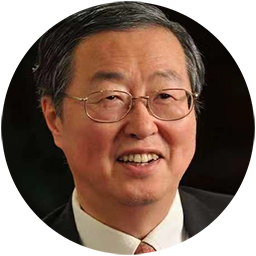
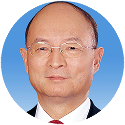
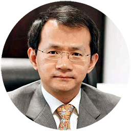
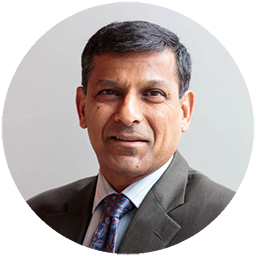
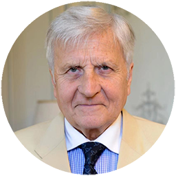
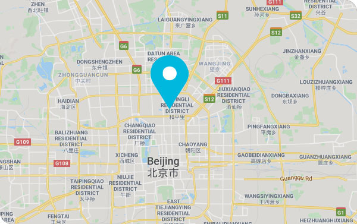

SPEAKERS
SPEAKERS

Zhou Xiaochuan
President of China Society for Finance and Banking; Former Governor of the People's Bank of China

CHEN Yuan
Vice Chairperson of the 12th National Committee of the Chinese People's Political Consultative Conference (CPPCC); Former Chairman of China Development Bank
HU Xiaolian
Chairman, the Export-Import Bank of China

YIN Yong
Vice Mayor of the People's Government of Beijing Municipality
Abhijit BANERJEE
2019 Nobel Laureate in Economic Sciences
Lawrence H. SUMMERS
Member of Caixin Media Credibility Committee; Charles W. Eliot University Professor, Harvard University; Former United States Secretary of the Treasury

Raghuram RAJAN
The 23rd Governor of the Reserve Bank of India

Jean-Claude TRICHET
Chairman of the Group of 30; Former President of the European Central Bank (Video Connection)
AGENDA
AGENDA
DAY1
Thursday, November 7
14:00-17:00
14:00-15:00
16:00-17:00
18:00-20:30
DAY2
Friday, November 8
08:00-09:00
09:00-09:05
12:00-13:50
14:30-16:00
14:30-15:30
DAY3
Saturday, November 9
08:00-08:50
08:50-09:10
10:00-11:00
10:00-12:00
13:30-15:00
15:15-17:15
DAY4
Sunday, November 10
09:00-09:10
09:10-10:55
09:00-12:30
09:00-09:05
09:05-09:25
09:25-10:05
10:05-10:30
10:30-11:30
12:20-12:40
SPONSORS
OUR PARTNERSHIP
LEAD SPONSOR


SPECIAL PARTNER


SPONSOR


VENUE
WHERE TO FIND US?
Contact Us
- Address: Diaoyutai State Guesthouse, 2 Fucheng Rd, Haidian, Beijing, China
- Join the event: Tang Cheng, chengtang@caixin.com
- Partner with us: Zhao Yuhan, yuhanzhao@caixin.com
